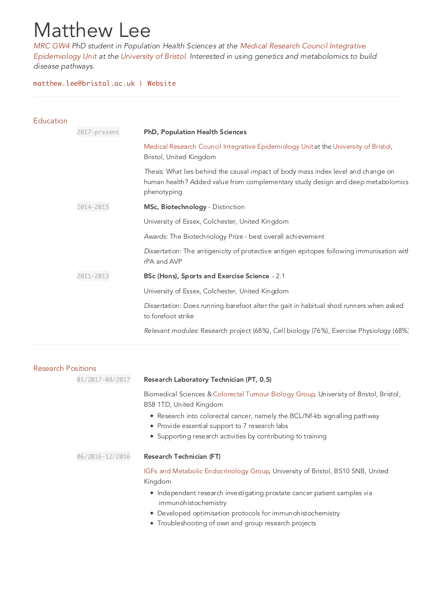
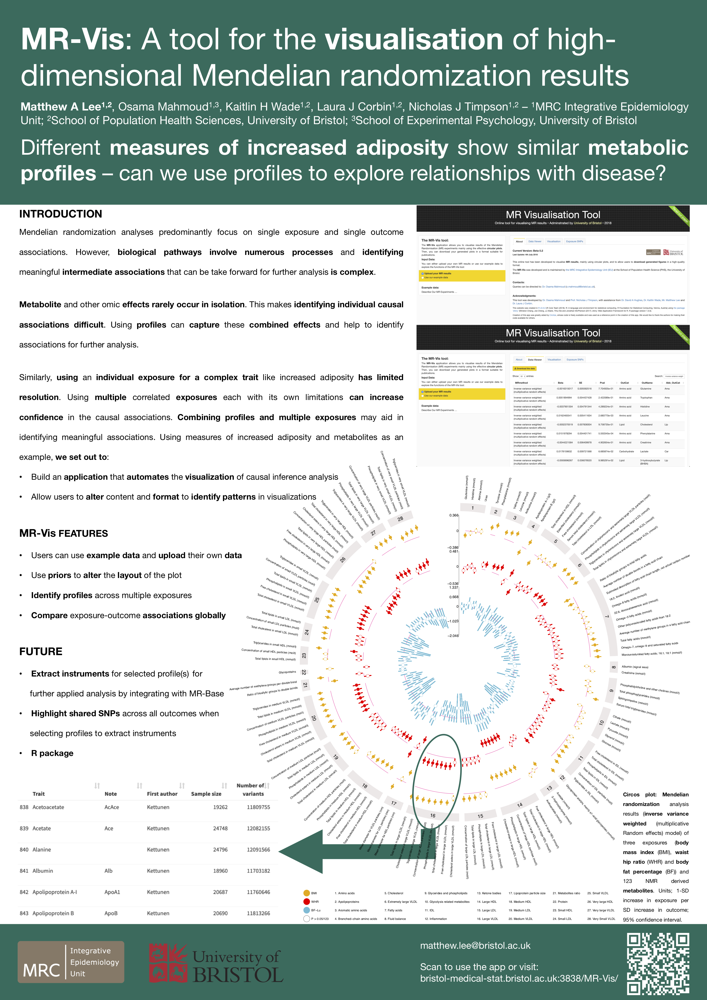
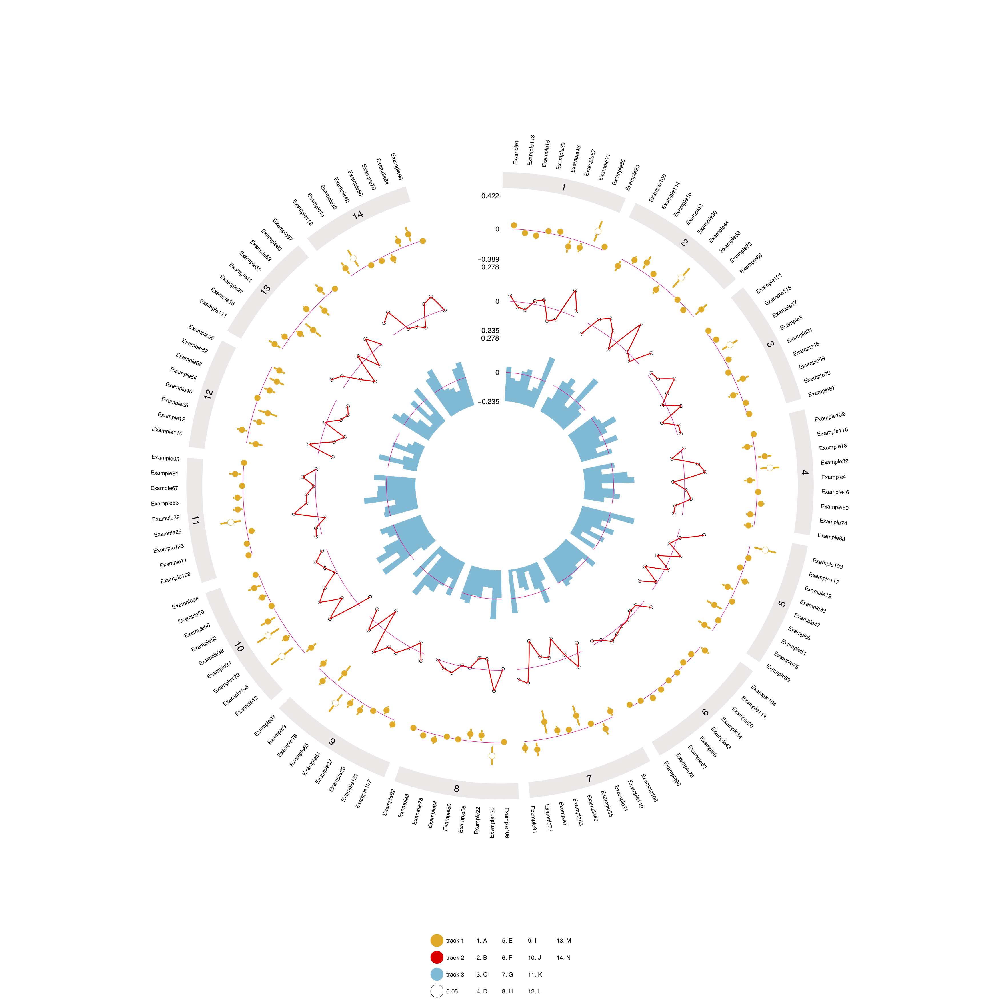
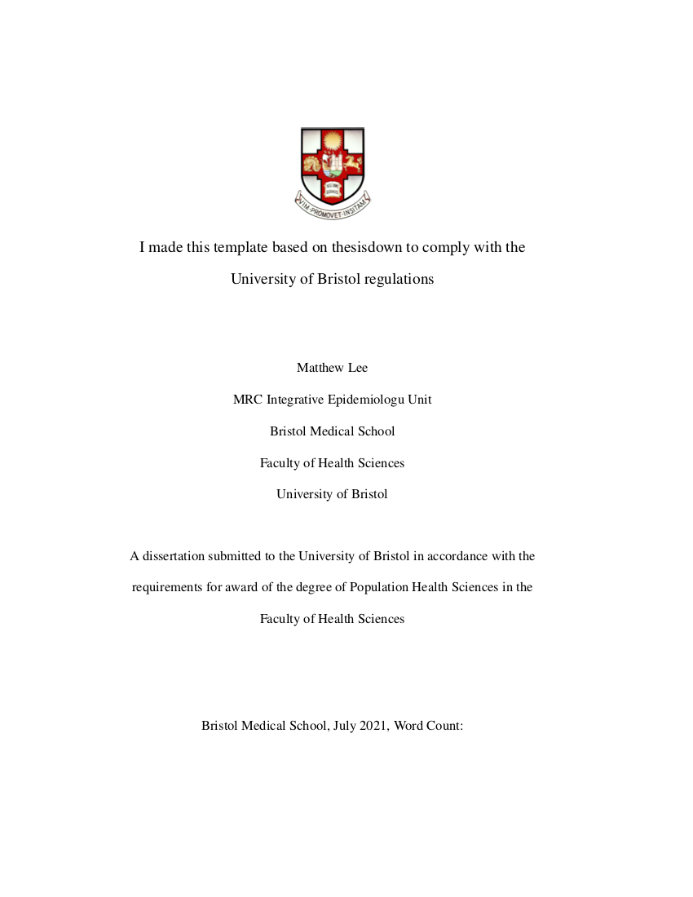
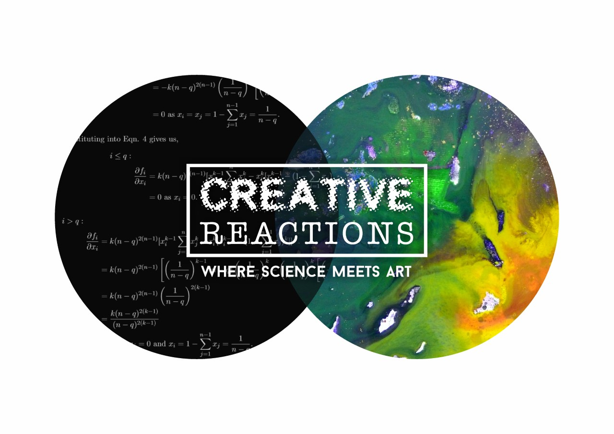

Matthew Lee
PhD student, Population Health Sciences
I'm a genetic epidemiologist at the MRC Integrative Epidemiology Unit at the University of Bristol researching associations between increased fat mass, metabolomics, and diseases.

CV
I am interested in working out how to build disease pathways using genetics and metabolomics

Posters/presentations
You can see and download all of the posters and presentations I have given here

GWAS of glycosuria
Genome-wide association study of glycosuria in ~10,000 pregnant mothers from two cohorts from the UK and Finland

EpiCircos
Data visualisation tools for implementing Circos plots for epidemiologists conducting large metabolomics association studies

bristolthesis
Thesis template built off of thesisdown for producing PhD theses that conform to University of Bristol regulations

Creative Reactions
Reserachers and artists working together to create works of art that enagge diverse audiences
- © Untitled. All rights reserved.
- Design: HTML5 UP